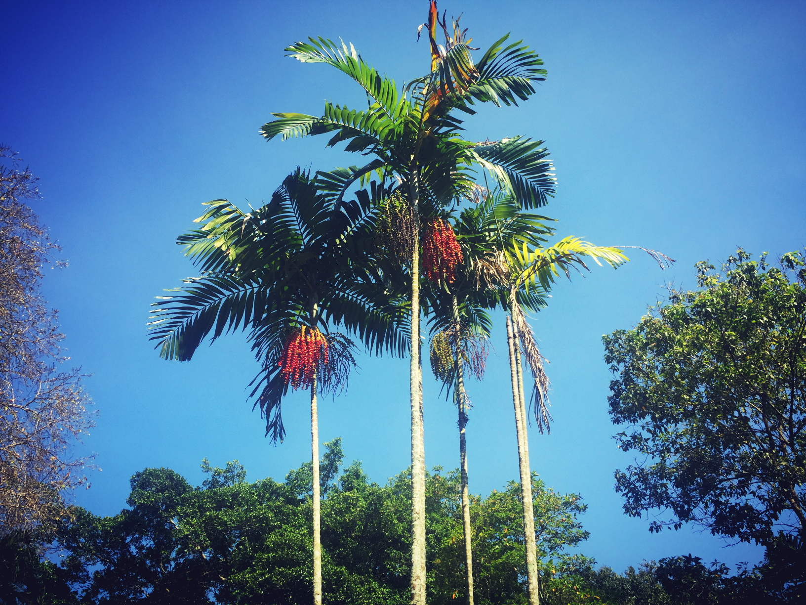

Areca nut palm (หมาก)
ประวัติ
ต้นหมาก มีถิ่นกำเนิดในทวีปเอเชียเขตร้อน จัดเป็นไม้ยืนต้นจำพวกปาล์ม มีความสูงของต้นประมาณ 10-15 เมตร ลำต้นตั้งตรง เป็นต้นเดี่ยวไม่แตกกิ่งก้าน ลักษณะของลำต้นเป็นรูปทรงกระบอก มีขนาดเส้นผ่านศูนย์กลาง 8-12 เซนติเมตร เปลือกลำต้นเป็นรอยขวั้นรอบ ๆ ขึ้นไปตลอดลำต้น ในระยะแรกจะเจริญเติบโตด้านกว้างและด้านสูง แต่หลังจากหยุดการเจริญเติบโตจะเจริญเติบโตด้านความสูง ต้นหมากมีตายอดส่วนปลายสุดของลำต้น ถ้ายอดตายหมากจะตาย ตายอดจะเป็นที่เกิดของใบหลังจากใบร่วงหล่นจะทิ้งรอยติดของใบไว้ เรียกว่าข้อ ข้อของต้นหมากสามารถคำนวณหาอายุหมากได้ 1 ปี โดยหมากจะมีใบหรือข้อเพิ่มขึ้น 5 ใบ หรือ 5 ข้อ ต้นหมากจะมีเนื้อเป็นเสี้ยนยาวจับตัวกันแน่นบริเวณเปลือกนอกลึกเข้าไปประมาณ 2 เซนติเมตร แต่ส่วนกลางของลำต้นเป็นเสี้ยนไม่อัดแน่น และมีเนื้อไม้อ่อนนุ่มคล้ายกับฟองน้ำ จึงทำให้ต้นหมากเหนียวและสามารถโยกเอนได้มาก ขยายพันธุ์ด้วยวิธีการเพาะเมล็ด เจริญเติบโตได้ดีที่ระดับความสูงจากระดับน้ำทะเลสูงกว่า 700 เมตร

ลักษณะ
ลำต้น หมากเป็นไม้ยืนต้นมีลำต้นเดี่ยวไม่แตกกอ เส้นผ่าศูนย์กลางประมาณ 5-6 นิ้ว ระยะแรกจะมีการเจริญ โตด้านกว้างและด้านสูง หลังจากหยุดเจริญเติบโตจะเจริญเติบโตด้านความสูง รูปทรงกระบอกตรง หมากมีตายอดส่วนปลายสุดของลำต้นถ้ายอดตายหมากจะตาย ตากยอดจะเป็นที่เกิดของใบหลังจากใบร่วงหล่นจะทิ้งรอยติดของใบเรียกว่าข้อ ข้อของหมากสามารถคำนวณหาอายุหมากได้ 1 ปี หมากจะมีใบหรือข้อเพิ่มขึ้น 5 ใบ หรือ 5 ข้อ ต้นหมากมีเนื้อเป็นเสี้ยนยาว ๆ จับตัวกันแน่นบริเวณเปลือกนอกลึกเข้าไปประมาณ 2 เซนติเมตร ส่วนกลางลำต้นเป็นเสี้ยนไม่อัดแน่นเหมือนด้านนอกและมีเนื้อไม้อ่อนนุ่นคล้ายฟองน้ำทำให้ต้นหมากเหนียวและสามารถโยกโอนเอนได้มาก ใบ เกิดจากเนื้อเยื่อส่วนปลายยอด ปลายลำต้นประกอบด้วยโคนกาบใบเรียกว่ากาบหมากหุ้มติดลำต้นเป็น แผ่นใหญ่ ก้านประกอบด้วยใบย่อย เมื่อหมากออกดอก ดอกหรือภาษาท้องถิ่นเรียกจั่นหมาก ซึ่งถูกห่อหุ้มด้วยกาบหมาก เมื่อกาบหมากแก่หลุดร่วงไปจะเห็นดอกหมาก ดอก ดอกหมากหรือจั่นหมากเกิดบริเวณซอกโคนก้านใบหรือกาบหมาก ดอกออกรวมกันเป็นช่อใหญ่ประกอบด้วยโคนจั่นยึดติดอยู่ที่ข้อของลำต้น ก้านช่อดอกเป็นเส้นยาวแตกออกโดยรอบแกนกลาง ก้านช่อดอกจะมีทั้งดอกตัวผู้และดอกตัวเมีย โดยตัวผู้อยู่ส่วนปลายตัวเมียอยู่ด้านล่างหรือด้านใน ดอกตัวผู้ใช้เวลานาน 21 วัน หลังจากนั้น 5 วัน ดอกตัวเมียเริ่มบาน ผล ผลหมากมีลักษณะกลมหรือกลมรี เส้นผ่าศูนย์กลาง 2 – 2.5 โดยเฉลี่ยผลรวมกันเป็นทะลาย ใน 1 ทะลายจะมีผลอยู่ประมาณ 10 – 150 ผล ผลอ่อนสีเขียวเข้ม เรียกหมากดิบ ผลแก่จะผิวเปลือกจะเปลี่ยนเป็นสีเหลืองอมส้มทั้งผลเรียกหมากสุกหรือหมากสง ผลประกอบด้วย 4 ส่วน คือเปลือกชั้นนอก ส่วนเปลือกเป็นเยื่อบาง ๆ สีเขียว เนื้อเปลือกมีเส้นใยละเอียด เหนียว เปลือกชั้นกลางเป็นเส้นใยหนามากมองเห็นชัด เมื่อผลอ่อนเส้นใยอ่อน แก่จะเหนียวแข็ง เปลือกชั้นในเป็นเยื่อบาง ๆ ละเอียดติดอยู่กับเนื้อหมาก ส่วนของเมล็ดหรือเนื้อหมากถัดจากเยื่อบาง ๆ เข้าไปเป็นส่วนของเนื้อหมาก เมื่ออ่อนจะนิ่ม เนื้อส่วนผิวจะมีลายเส้นสีเหลืองถึงสีน้ำตาล เนื้อจะมีสีเหลืองอ่อน ๆ ถึงสีเหลืองเข้มอมแดง